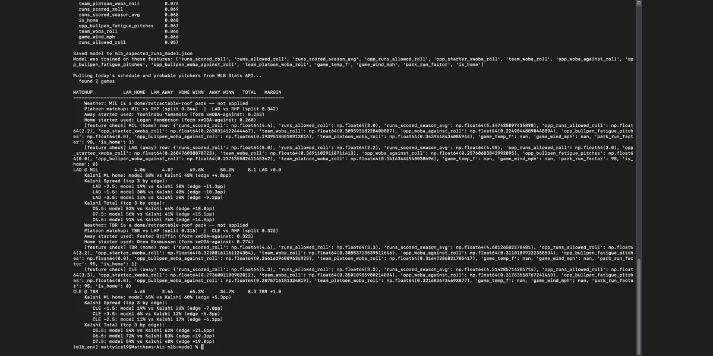
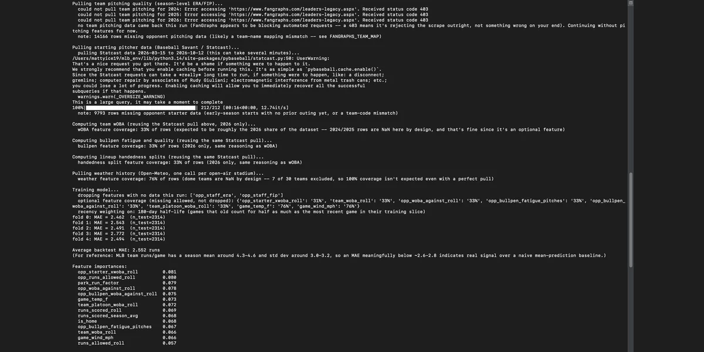

MLB Game Outcome Prediction Model
A daily-running model that projects moneyline, total runs, and margin for every MLB game on the slate, then checks its own numbers against live Kalshi markets to see where it actually disagrees with the market. Built solo, iterated through 24 versions, and still running in production every day the season is live.

The Problem
I wanted to build something that actually projects outcomes for every game on a given day, not just season-long stat lines. That meant pulling three seasons of game logs, building features that update daily, training a model on them, and then doing something with the output — checking it against a real market instead of just staring at a backtest number. Most student projects stop at the model. I wanted mine to run every morning on its own and produce something I'd actually look at.
The hard part wasn't the model itself, it was everything around it. Team codes change (the Athletics moved and dropped "Oakland" from their name mid-dataset), different APIs label the same team differently, and Kalshi's market data comes back as a whole ladder of threshold contracts instead of one clean line. None of that shows up in a tutorial. Getting all of it to talk to each other correctly, every single day, without babysitting it, was most of the actual work.

What I Built
- Pulled three seasons of team game logs and built a daily-refreshing feature set — rolling run production, opposing starter quality, team wOBA, bullpen fatigue and quality, platoon splits, park factors, and open-air stadium weather.
- Trained an XGBoost model with a Poisson objective to project expected runs for each team, with exponential recency weighting so recent games count more than ones from last season without throwing the older data out entirely.
- Converted the two teams' projected run distributions into win probability, total runs, and margin using Skellam and Poisson math, instead of training three separate models for three different questions.
- Pulled live probable pitchers and today's full slate from the MLB Stats API every morning, with no manual input required to know who's playing who.
- Built a live Kalshi integration that pulls the actual moneyline, spread, and total-runs markets for every game and compares the model's number against the market's number, game by game.
- Built an HTML results tracker that logs every projection, grades it against the actual final score once the game's over, and keeps a running record of hit rate by market.
- Normalized win probabilities so home and away always sum to 100%, fixing a gap where tie probability from the Skellam distribution was getting dropped instead of resolved to a winner.
Key Decisions & Findings
Early on, the tracker graded moneyline picks by which side had better value against Kalshi's price, not which side the model actually favored to win. A team priced at 38% by the model but only 32% on Kalshi has real value, but it's still the underdog. Mixing those two questions up made the tracker look worse than the model actually was. I split them — edge is still shown, but grading is strictly "who does the model say wins," which is a different number.
Kalshi doesn't post one spread and one total line per game — it lists a whole ladder of threshold contracts, and sometimes two events exist for the same two teams at once if a game got postponed and rescheduled. A naive "find the market for these two teams" search grabbed the wrong one more than once. I ended up matching on the closest actual game time instead of just team names, which fixed it.
I wanted the model to lean on this season without throwing out the extra training volume from the two seasons before it. A hard cutoff (train on this season only) meant less data and noisier early-season numbers. Instead I weighted every game by an exponential half-life, so a game from six months ago counts for less than one from last week without disappearing from the training set entirely.
One early version of the bullpen fatigue feature filled missing values with zero instead of leaving them blank, which quietly told the model that two-thirds of its training data had a fully rested bullpen every single game — a confidently wrong number is worse than an honestly missing one. XGBoost handles missing values fine on its own, so the fix was to stop filling gaps and just let them be gaps.